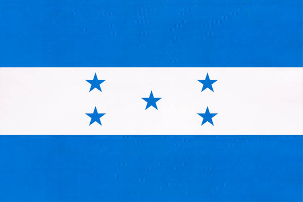

Símbolos patrios:
- Bandera: Tiene franjas azul, blanco, azul con cinco estrellas azules en el centro
- Escudo: Representa montañas, herramientas y un arcoíris
- Flor nacional: Orquídea Brassavola digbyana
- Ave nacional: Guacamaya.
Historia:
Obtuvo su independencia de España el 15 de septiembre de 1821.
Honduras ha experimentado conflictos y participación en conflictos centroamericanos.
Extensión territorial:
Honduras tiene una extensión territorial de 112,492 km2.
Departamentos:
Consta de 18 departamentos, como Francisco Morazán, Cortés, y Atlántida.
Lugares turísticos:
- Ruinas de Copán
- Islas de la Bahía
- Parque Nacional La Tigra
- Lago de Yojoa
- Tela y La Ceiba (playas)